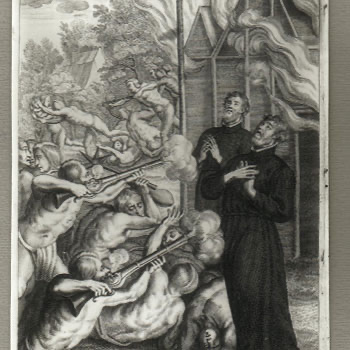

Sjevernoamerički mučenici (8 svetaca)
Svećenik · Misionar · Mučenik
Sv. Karlo Garnier
Iz Francuske je otputovao u Novu Francusku i posvetio se životu među Huronima i Petunima. Učio je njihove jezike, obilazio naselja i nastavio služiti u misiji Saint-Jean sve do mučeništva.

Izvor slike
- Spomendan
- 19. listopada
- Zaštitništvo
- Nije navedeno u izvoru
- Slavi se
- 19. listopada
Životopis
Sveti Charles Garnier rodio se 25. svibnja 1606. u Parizu, u obitelji povezanoj s kraljevskom službom. Školovao se na isusovačkom Collège de Clermont, a u Družbu Isusovu stupio je 1624. Nakon novicijata, filozofskih i teoloških studija te nastavničke službe zaređen je za svećenika 1635. godine.
Želio je poći u Novu Francusku i naviještati evanđelje starosjedilačkim narodima. Otac se isprva protivio putovanju zbog velikih opasnosti, ali mu je naposljetku dao dopuštenje. Charles je isplovio u ožujku 1636. i u lipnju stigao u francusku koloniju. Ubrzo je s isusovcem Pierreom Chastellainom krenuo prema huronskoj misiji.
Do kraja života služio je među Huronima i Petunima te se više nije vratio u Francusku. Učio je njihove jezike i način života, obilazio naselja i poučavao vjeru. Huroni su ga nazvali Ouracha, „darovatelj kiše”, jer je nakon njegova dolaska završilo razdoblje suše. Od 1641. do 1646. djelovao je u misiji Saint-Joseph, a zatim među Petunima.
Njegovo se poslanje odvijalo u vrijeme ratova, epidemija i raspada starosjedilačkih zajednica. Garnier je znao da mu prijeti smrt, osobito nakon ubojstva isusovaca Jeana de Brébeufa i Gabriela Lalemanta u ožujku 1649. Ipak je ostao s ljudima kojima je bio poslan.
Dana 7. prosinca 1649. irokeški su ratnici napali petunsko selo u kojem je djelovao. Charles je tijekom napada pogođen iz vatrenoga oružja. Poginuo je u dobi od četrdeset tri godine, nakon trinaest godina misionarske službe u Novoj Francuskoj.
Papa Pio XI. proglasio ga je blaženim 1925., a svetim 29. lipnja 1930. zajedno sa sedmoricom drugih kanadskih mučenika. Spomendan svetoga Charlesa Garniera i njegovih drugova slavi se 19. listopada. Njegova postojanost svjedoči o misionaru koji nije napustio povjereni narod ni onda kada je znao da ga ostanak može stajati života.